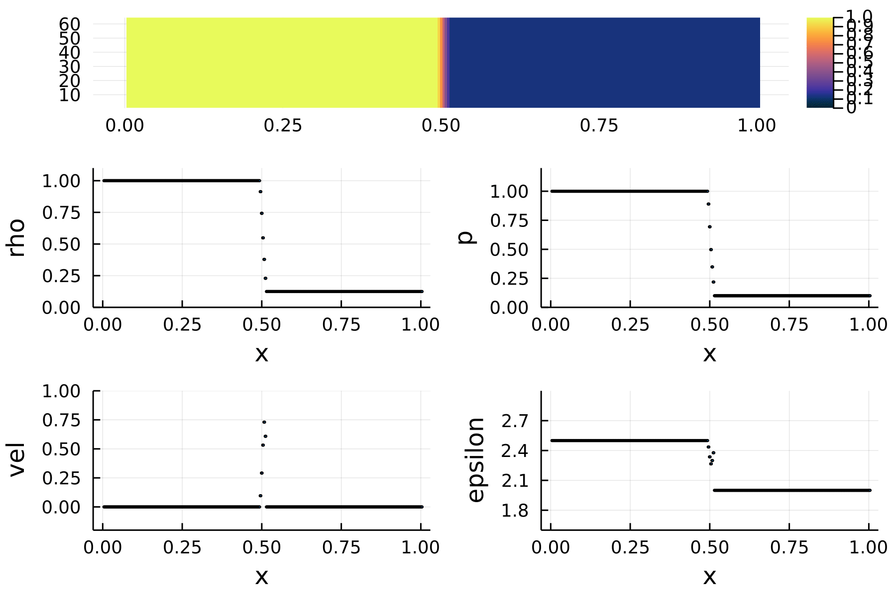

Fun with Julia
I am a strong advocate of Julia, a new programming language for scientific computing. Julia combines the speed of C/Fortran with the user-friendliness of Python. In this first demonstration, I wrote a one-dimentional hydrodynamic code. This simulation, along with the plotting and animation, was produced entirely from a single Julia script, as demonstrated below.

using Parameters
using Plots
using Printf
""" A struct to store all parameters and data of the grids """
@with_kw mutable struct Grid
nx::Int
ng::Int
t = 0.
xmin = 0.
xmax = 1.
xlen = nx + 2 * ng
gamma = 1.4
C = 0
jlo = ng + 1
jhi = nx + ng
# the grids
dx = (xmax - xmin) / (nx - 1)
x = xmin .+ (1:(nx + 2*ng) .- ng) * dx
u = zeros(xlen, 3)
end
""" set the initial conditions """
function init!(g::Grid)
mid = floor(Int16, g.xlen/2)
g.u[1:mid, 1] .= 1.0
g.u[(mid+1):end, 1] .= .125
pressure = zeros(Float64, g.xlen)
pressure[1:mid] .= 1.0
pressure[(mid+1):end] .= 0.1
g.u[:, 2] .= 0.
g.u[:, 3] .= pressure ./ (g.gamma - 1)
return
end
function fu(g::Grid)
# return F(u)
pressure = (g.gamma - 1) .* (g.u[:, 3] - 0.5 .* g.u[:, 2].^2 ./ (g.u[:, 1]))
fu = zeros(Float64, g.xlen, 3)
fu[:, 1] = g.u[:, 2]
fu[:, 2] = g.u[:, 2].^2 ./ g.u[:, 1] .+ pressure
fu[:, 3] = (g.u[:, 3] + pressure) .* g.u[:, 2] ./ g.u[:, 1]
fu
end
function fill_BCs!(g::Grid)
for i = 1:g.ng
g.u[i, :] = g.u[g.jlo, :]
end
for i = (g.jhi + 1) : (g.jhi + g.ng)
g.u[i, :] = g.u[g.jhi, :]
end
return
end
function summary(g::Grid)
println("t = ", g.t)
println("Size: ", size(g.u))
println("Density (every 5th): ", g.u[:, 1][g.jlo:5:g.jhi])
println("Velocity (every 5th): ", (g.u[:, 2] ./ g.u[:, 1])[g.jlo:5:g.jhi])
end
""" make the plot or update the animation """
function plot_curve(g::Grid; fn="t.png", is_save=true)
# calculate rho, u, p e
x = g.x[g.jlo:g.jhi]
rho_f = g.u[g.jlo:g.jhi, 1]
vel_f = g.u[g.jlo:g.jhi, 2] ./ rho_f
e_f = g.u[g.jlo:g.jhi, 3]
epsilon_f = (e_f./rho_f) - (.5 .* vel_f.^2)
p = (g.gamma - 1) .* rho_f .* epsilon_f
data = zeros(size(rho_f, 1), 4)
data[:, 1] = rho_f
data[:, 2] = p
data[:, 3] = vel_f
data[:, 4] = epsilon_f
p = scatter(x, data, layout=4,
# title=["density" "pressure" "velocity" "specific energy"],
ms=1, legend=false, xlabel="x",
ylabel=["rho" "p" "vel" "epsilon"], xlim=[0, 1],
ylim=[(0., 1.1) (-0., 1.2) (-.2, 1) (1.6, 3.)], dpi=300)
# annotate!(1.25, 1.25, "t = $(g.t)")
if is_save
savefig(fn)
else
return p
end
end
""" make the plot or update the animation """
function plot_heatmap_and_curve(g::Grid; fn="t.png", is_save=true)
# calculate rho, u, p e
x = g.x[g.jlo:g.jhi]
h = floor(Int16, size(x, 1) / 8)
y = 1:h
rho_f = g.u[g.jlo:g.jhi, 1]
z = float(ones(h) * reshape(rho_f, 1, :))
p0 = heatmap(x, y, z, dpi=300, size=(600, 100), clim=(0., 1.), xlim=(-0.05, 1.05),
showaxis = false, c=:thermal)
p1 = plot_curve(g, is_save=false)
l = @layout [a{0.2h} ; b]
plot(p0, p1, layout=l)
if is_save
savefig(fn)
end
end
""" the main function """
function runnit(dx, tmax; dnout::Int=1, anim::Any, plotit::Function)
println("Hello, world!")
g = Grid(nx=dx, ng=1, t=0.)
v = 1.
g.C = 0.45
dt = g.C * g.dx / v
init!(g)
uinit = copy(g.u)
unew = zeros(size(g.u))
count = 0
ocount = 0
println("Init:")
println("dt = ", dt, " t = ", g.t)
# summary(g)
# plot_curve(g, fn="f_init.png")
# plot_heatmap_and_curve(g, fn=@sprintf("fig/f_%04d.png", ocount))
skip = dnout
while g.t < tmax + dt - 1e-10
fill_BCs!(g)
if g.t > tmax
g.t = tmax
dt = dt - (g.t - tmax)
end
count += 1
### LAX SCHEME ###
for j in g.jlo:g.jhi
unew[j, :] = 0.5 * (g.u[j - 1, :] + g.u[j + 1, :]) - 0.5 * dt / g.dx * (fu(g)[j + 1, :] - fu(g)[j - 1, :])
end
g.u = copy(unew)
g.t = g.t + dt
# summary(g)
if count % skip == 0
ocount += 1
# plot_curve(g, fn=@sprintf("fig/f_%04d.png", idx))
# plot_heatmap(g, fn=@sprintf("fig/f_%04d.png", ocount))
# plot_heatmap(g, fn=@sprintf("fig/f_%04d.png", ocount), is_save=false)
plotit(g, fn=@sprintf("fig/f_%04d.png", ocount), is_save=false)
Plots.frame(anim)
println("Frame ", ocount)
end
end
end
Tend = 0.3
# Nd = 64
Nd = 512
Anim = Plots.Animation()
# runnit(Nd, Tend, dnout=5, anim=Anim, plotit=plot_curve)
runnit(Nd, Tend, dnout=5, anim=Anim, plotit=plot_heatmap_and_curve)
gif(Anim, "tube-10fps.gif", fps=10)
gif(Anim, "tube-15fps.gif", fps=15)
gif(Anim, "tube-20fps.gif", fps=20)